S-a născut la Paris în 1924. Artiştii suprarealişti explorează lumea viselor, vis plus realitate. Se folosesc variate elemente de limbaj şi mijloace de expresie plastică.
Salvador Dali - The Persistence of Memory
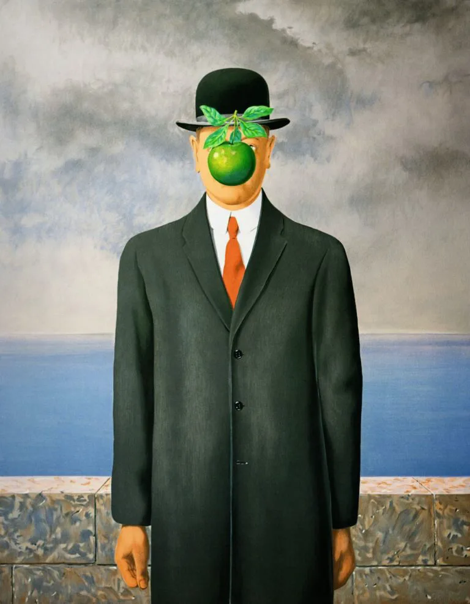
René Magritte - The Son of Man
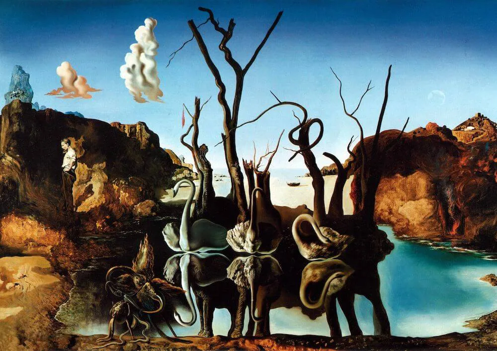
Salvador Dali - Swans Reflecting Elephants
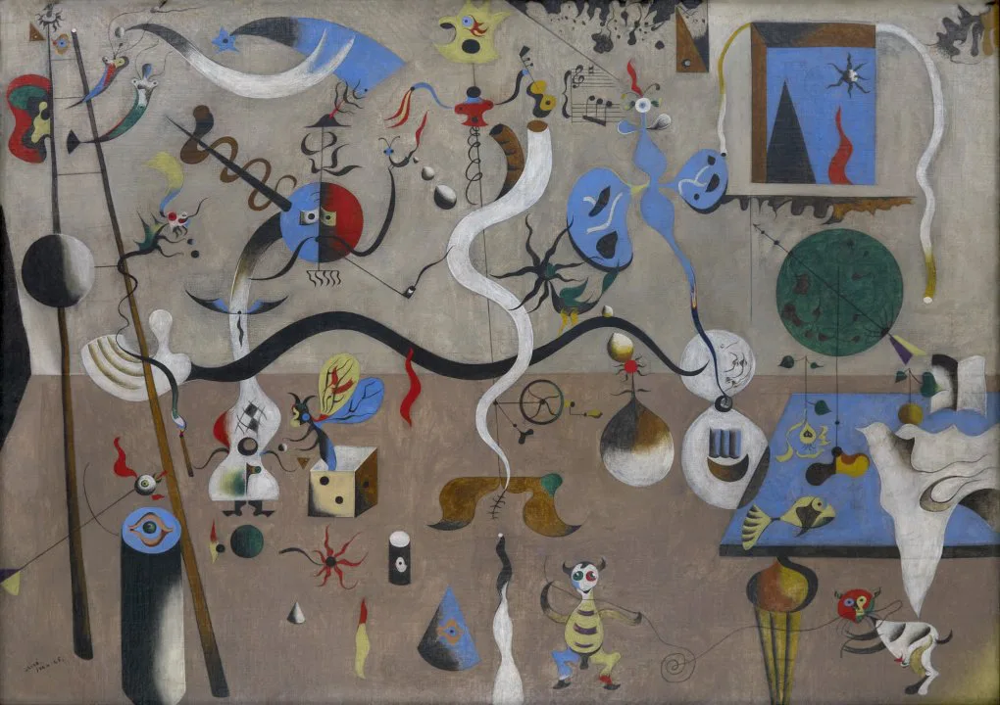
Joan Miró - Harlequin’s Carnival
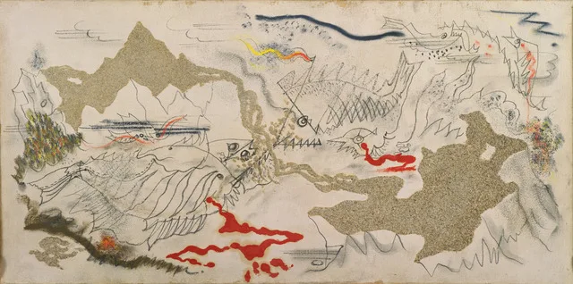
Andre Masson - Battle of Fishes
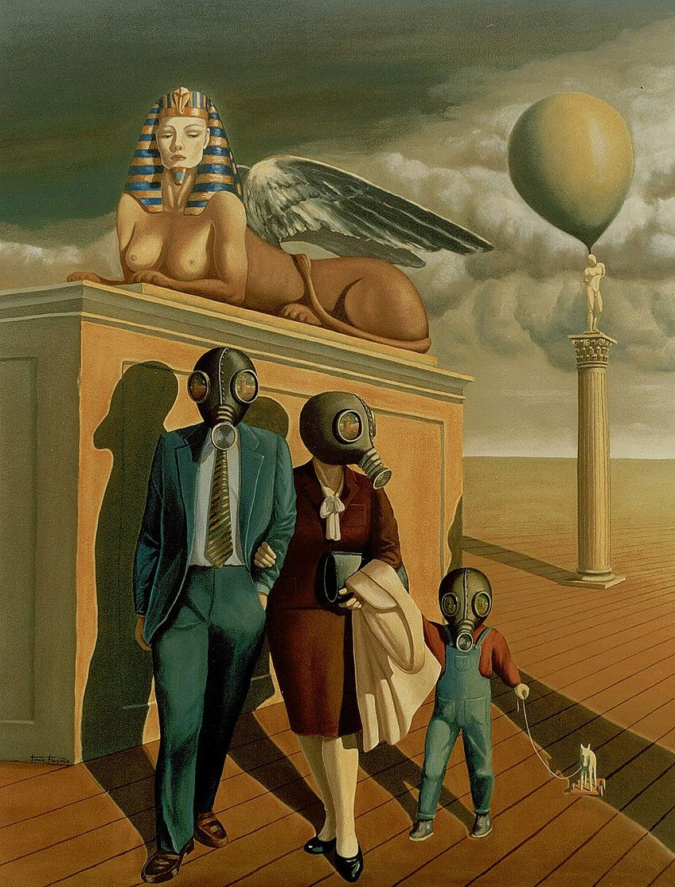
Davegore - La esfinge
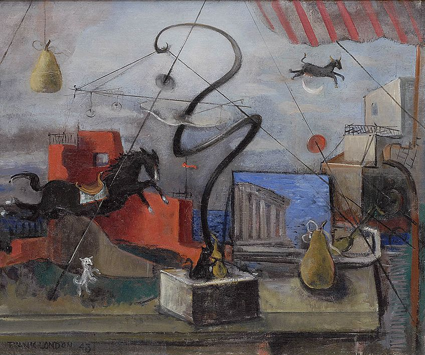
Frank Marsden London - Hi-Diddle the Cat’s the Fiddle
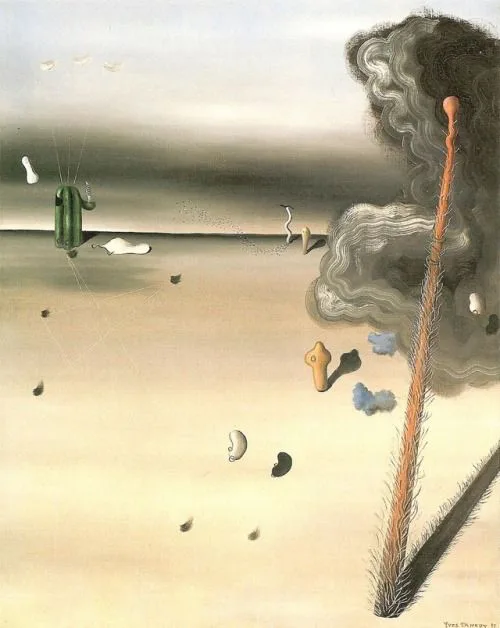
Yves Tanguy - Mama, Papa is Wounded
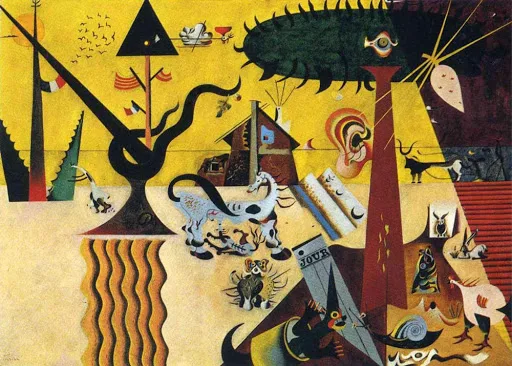
Joan Miró - The Tilled Field
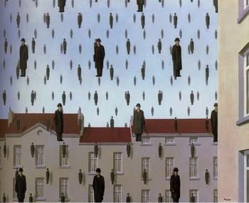
René Magritte - Golconda
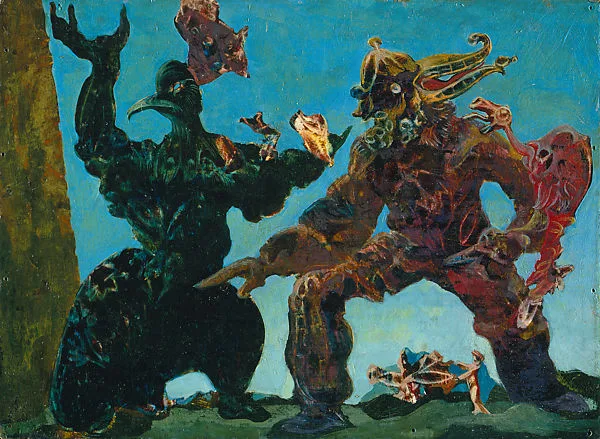
Max Ernst - The BarbariansPablo Picasso - L’Aubade
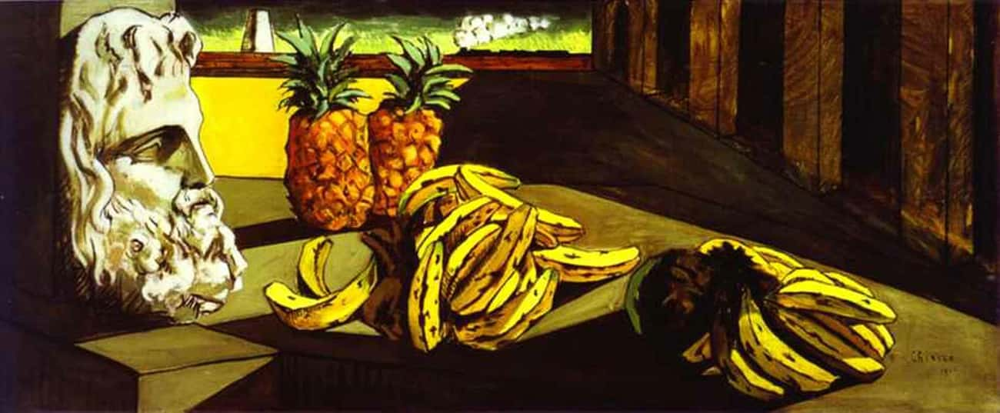
Giorgio de Chirico - Le Rêve Transformé
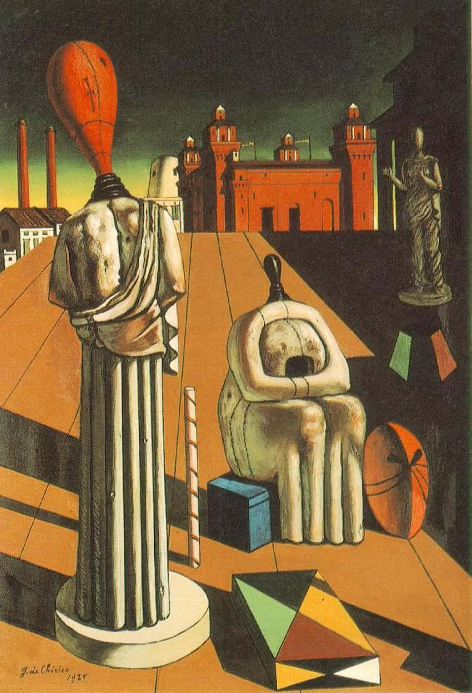
Giorgio de Chirico - The Disquieting Muses